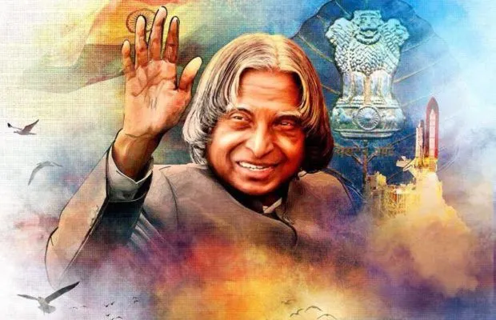

Missile Man of India | Scientist | Visionary | 11th President of India

Avul Pakir Jainulabdeen Abdul Kalam was born on 15 October 1931 in Rameswaram, Tamil Nadu. His father Jainulabdeen was a boat owner and imam of a local mosque, while his mother Ashiamma was a homemaker.
Kalam lived a simple life, remained unmarried, and was known for his humility and dedication to education and youth development. He enjoyed writing poetry, playing the veena, and listening to Carnatic music.
Despite financial difficulties during childhood, Kalam continued his studies through determination and hard work.
Kalam began his career at the Defence Research and Development Organisation (DRDO) and later joined the Indian Space Research Organisation (ISRO).
Dr. Kalam served as the 11th President of India from 2002 to 2007. He was widely known as the "People’s President" due to his connection with students and young innovators.
Dr. Kalam inspired millions through his vision for a developed India and his engagement with students. His birthday, 15 October, is celebrated as World Students’ Day in honour of his dedication to youth and education.
He passed away on 27 July 2015 while delivering a lecture at IIM Shillong, doing what he loved most...teaching.